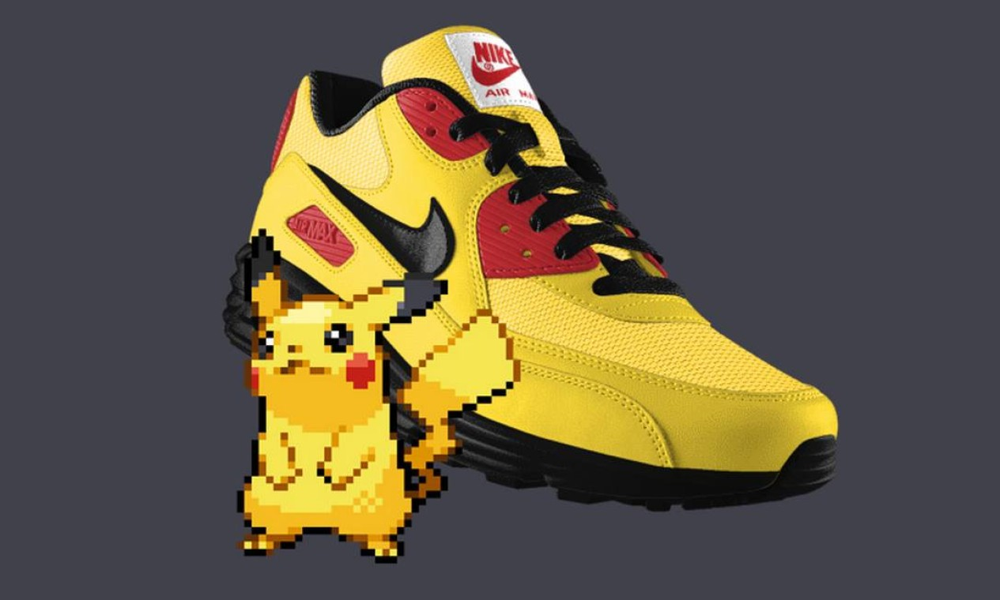
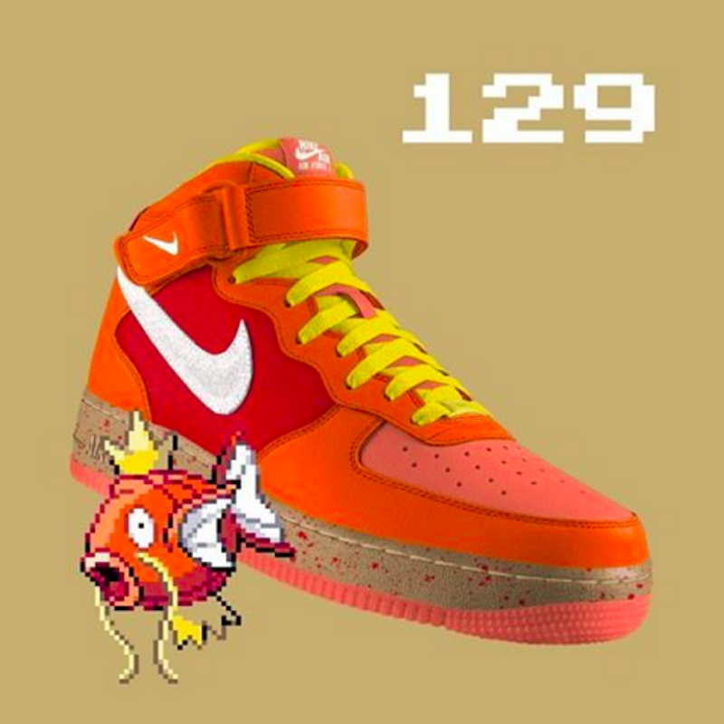
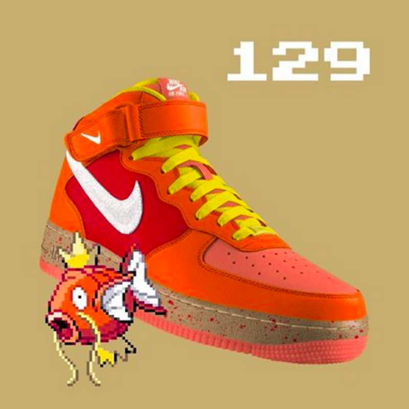
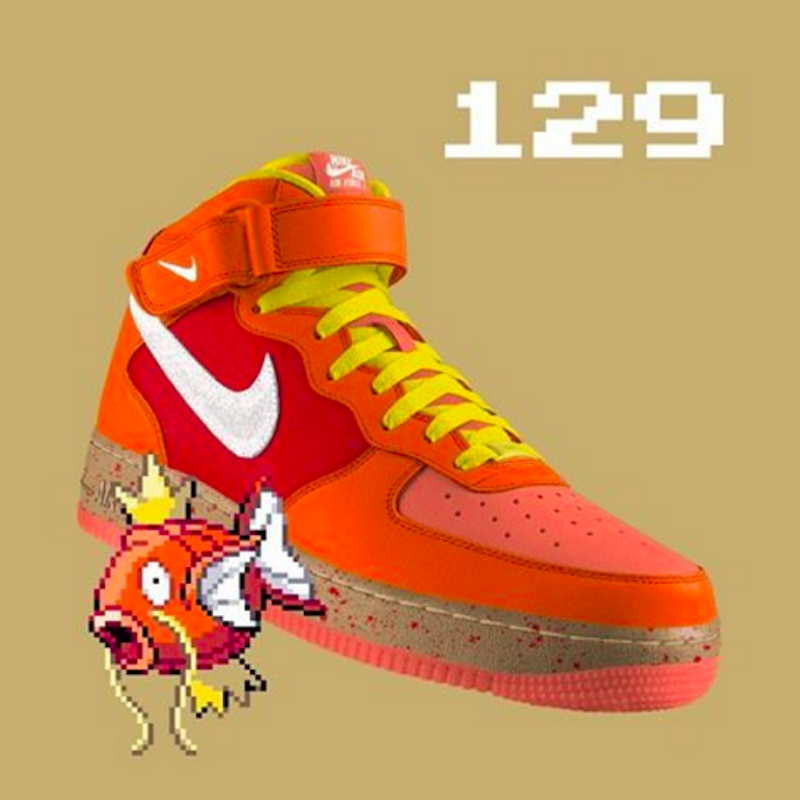

 


Colab Inusitada:
1. Temos o tênis Airmax 90 com a temática do Pikachu. Com detalhes na lingua e na palmilha se tornou um tênis muito popular entre os fãs do pokemon
2. Tambem foi feita a colaboração com o pokemon Magikarp. Feito em um Air Force Mid e com detalhes incriveis foi um dos tênis da colaboração mais vendidos